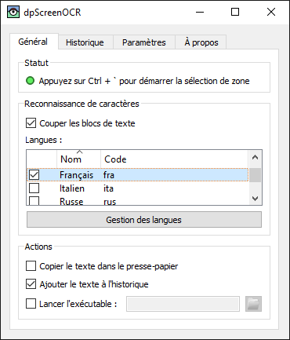

dpScreenOCR
dpScreenOCR est un programme de reconnaissance de texte à l'écran. Propulsé par Tesseract, il prend en charge plus de 100 langues et peut séparer des blocs de texte indépendants, tels que des colonnes. Lisez le manuel pour des instructions d'installation, de configuration, et d'utilisation du programme.
Télécharger la version 1.5.0 (notes de mise à jour, licence) :
Contribuez en participant aux traductions ou au développement.